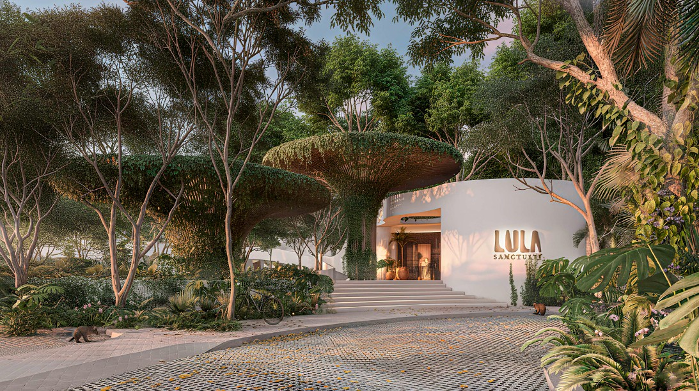
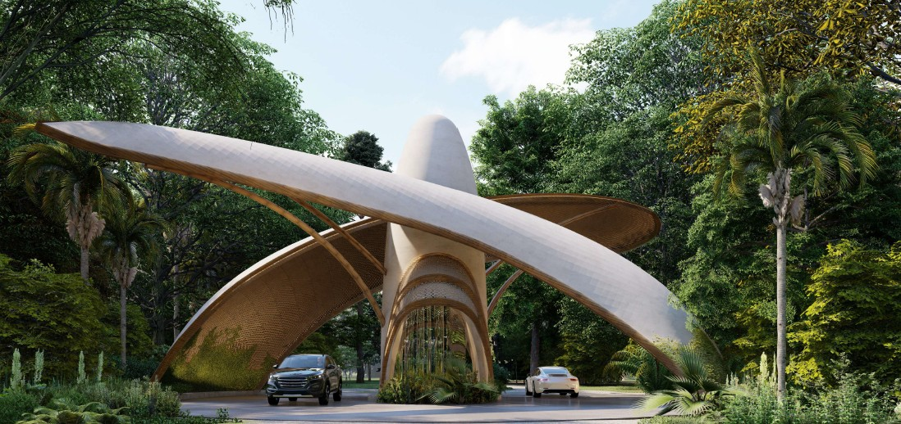
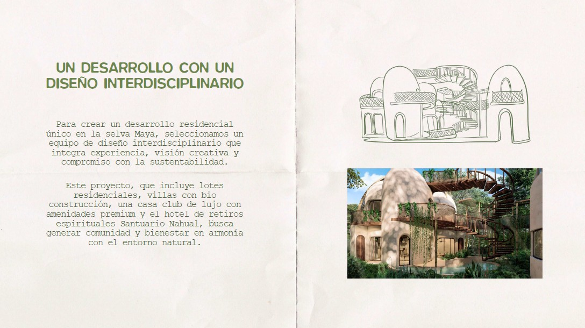
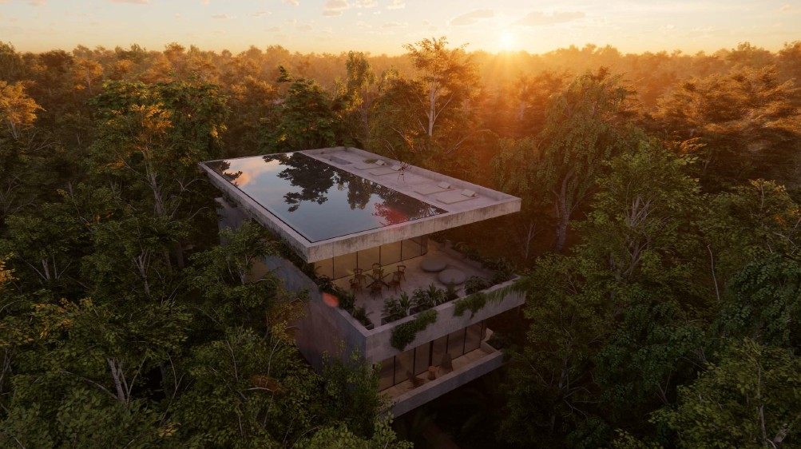
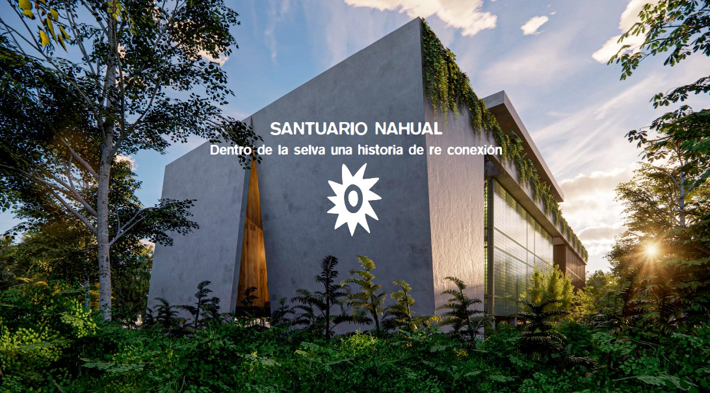
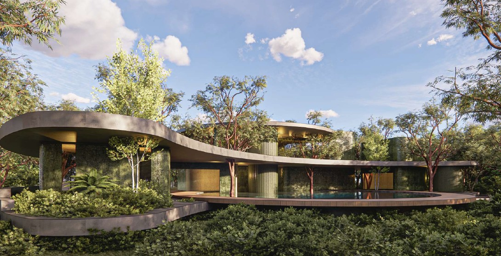
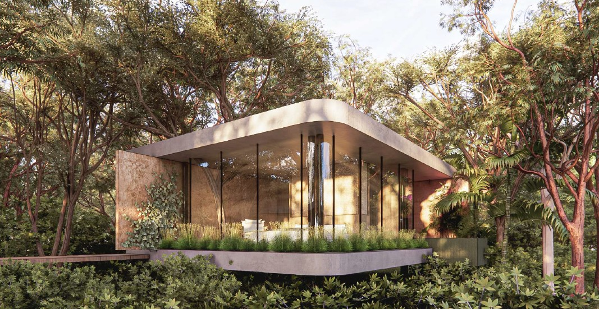
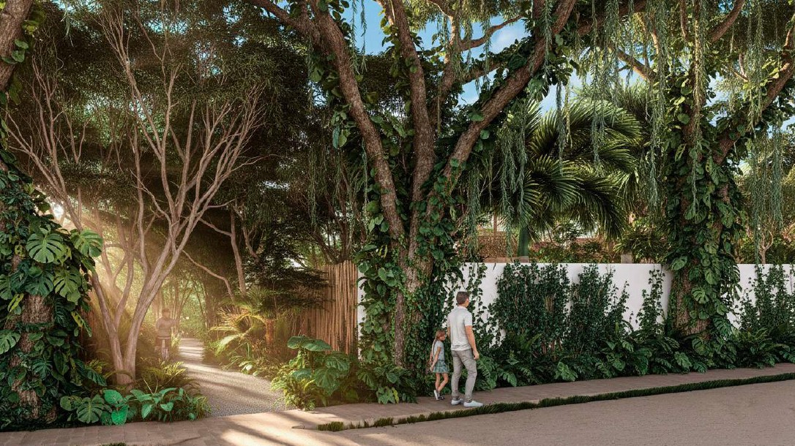
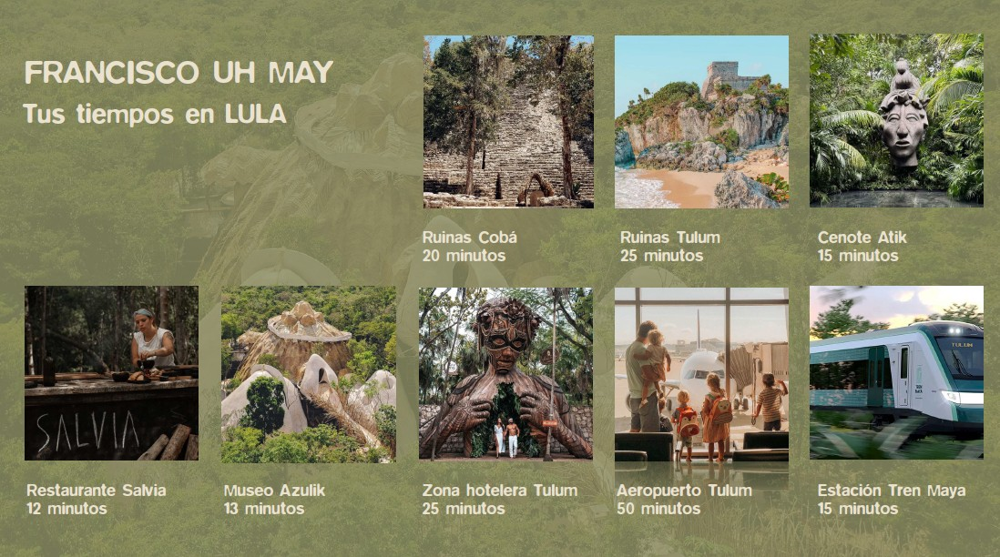

Rooftop infinity pool — jungle canopy at golden hour
"Welcome to the Quiet"
LULA is the name of the Alux — the ancient Maya spirit — that inhabits this extraordinary corner of the world. In this sanctuary, those who share the space with LULA become its guardians, protecting the environment and everything that breathes within it. Because in the act of caring for others, we discover our finest selves.
The name LULA means "The Path of Light" — where every star tells a story, every particle of light reveals a secret, and every step through the jungle is a step towards self-discovery. Residents here are not just building homes, but an entirely new way of living — in communion with nature and the cosmos.
Set in Francisco Uh May, 20 minutes from Tulum city, Lula Sanctuary sits between the archaeological zones of Cobá and Tulum, surrounded by 107+ cenotes, ancient Maya routes, and one of the most ecologically extraordinary landscapes on earth.

Entrance — sculptural bamboo and concrete gateway
Architecture
Every structure at Lula is conceived as an organic form — curved concrete, living walls, and glass that dissolves the line between inside and outside. The architecture doesn't impose on the landscape. It grows from it.

Villa — organic curved architecture emerging from the jungle


The Spirit of Lula
To live at Lula is to become a guardian of this place. The ancient Maya understood that the land is not something to be owned — it is something to be cared for. Every residence here is designed around that philosophy: living lightly, beautifully, and in deep respect for what surrounds you.
Ceremonies, community gatherings, and connection with the natural world are woven into life here. This is not just a property — it is a way of being.



Francisco Uh May
Francisco Uh May is a small village on the Cobá road — one of the most extraordinary locations in the entire Yucatán Peninsula. Situated between the ancient ruins of Cobá and Tulum, it sits at the heart of more than 107 cenotes, dense jungle, and some of the oldest Maya routes in existence.
Here you will find Museo Azulik — a biomorphic gallery immersed in the jungle — experimental cuisine fusing ancestral ingredients with sustainable techniques, and local crafts made from palm, clay and wood that carry centuries of Maya tradition.
What surrounds you
107+ cenotes between Tulum and Cobá — sacred underground rivers that have defined this landscape for millennia. Ancient Maya archaeological sites within minutes. Beach access to Playa Paraíso and the Tulum hotel zone just 20 minutes away.
The new Tulum International Airport and the Maya Train connect this corner of the world to the rest of it — without taking away any of what makes it extraordinary. The infrastructure is arriving. The opportunity is now.
Location

Enquire
Send me a message and I'll come back with full pricing, available plots and residences, and everything you need to understand this extraordinary opportunity.